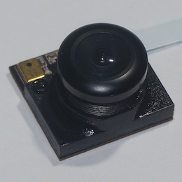

VoCore
Varieties
VoCore
Vocore + Dock
VoCore2
VoCore2 Ultimate
VoCore Camera

About the VoCore
Size: 1 sqin
OpenWrt/LEDE: Easy to code, compile, and has a stable system
Price: $4~$18 for each
Interface:Hardware support USB, Ethernet, I2C, SPI, etc
Open Source: Both software and hardware, totally free
Rerun
Rerun